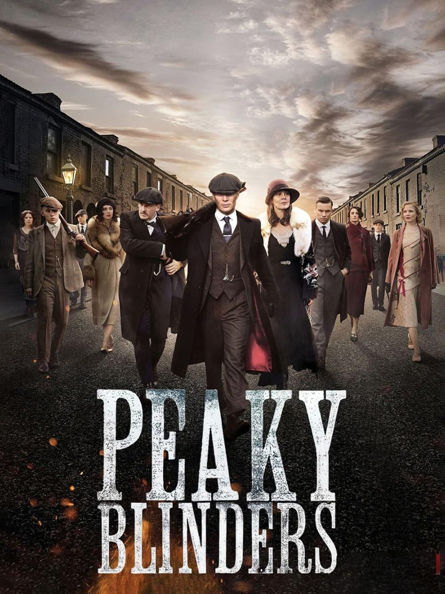
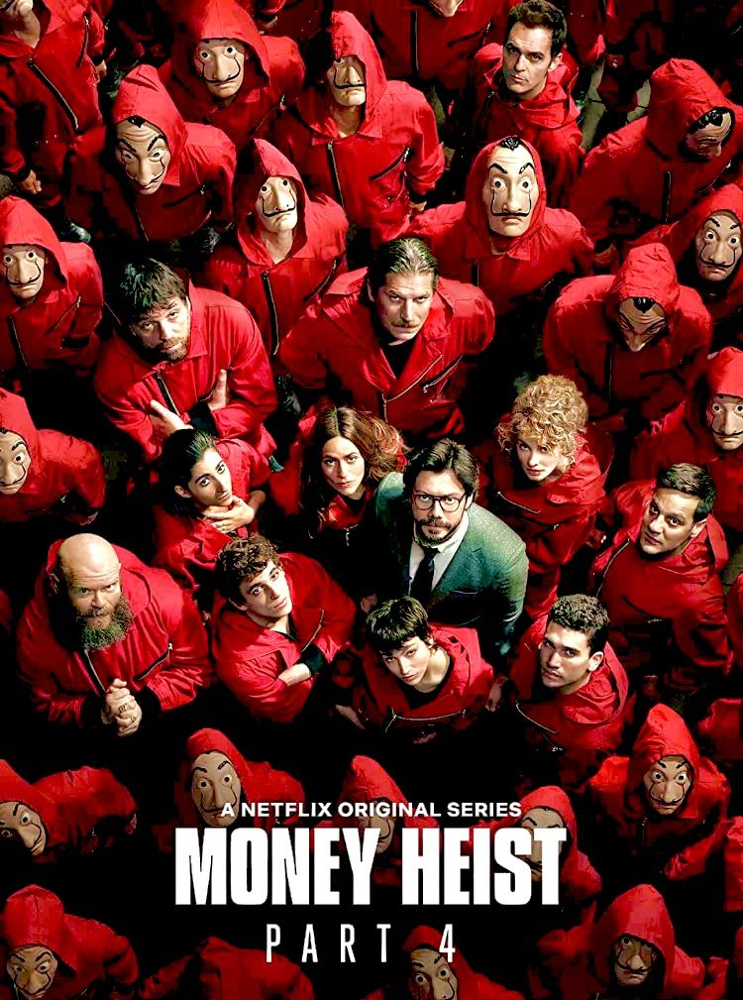
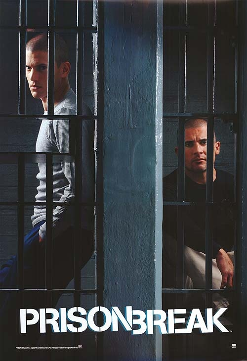

Gritty investigations and edge-of-your-seat mysteries.

CRIME
Peaky blinders
Peaky Blinders is a British crime drama that follows the Shelby family, a notorious gang in post-World War I Birmingham. The show is known for its stylish cinematography, complex characters, and intricate plotting. It explores themes of power, loyalty, and the consequences of violence as the Shelbys navigate the criminal underworld while trying to expand their empire.

CRIME
Money Heist
Money Heist is a Spanish heist crime drama that follows a group of robbers who, under the guidance of their enigmatic leader "The Professor," plan and execute meticulously crafted heists on the Royal Mint of Spain and the Bank of Spain. The show is known for its intense action, complex characters, and emotional depth, exploring themes of resistance, love, and the fight against oppression.

CRIME
Prison Break
Prison Break is an American action thriller that follows Michael Scofield, a structural engineer who deliberately gets himself incarcerated in order to break his wrongfully convicted brother, Lincoln Burrows, out of prison. The show is known for its suspenseful storytelling, intricate escape plans, and exploration of themes such as family loyalty, justice, and survival.